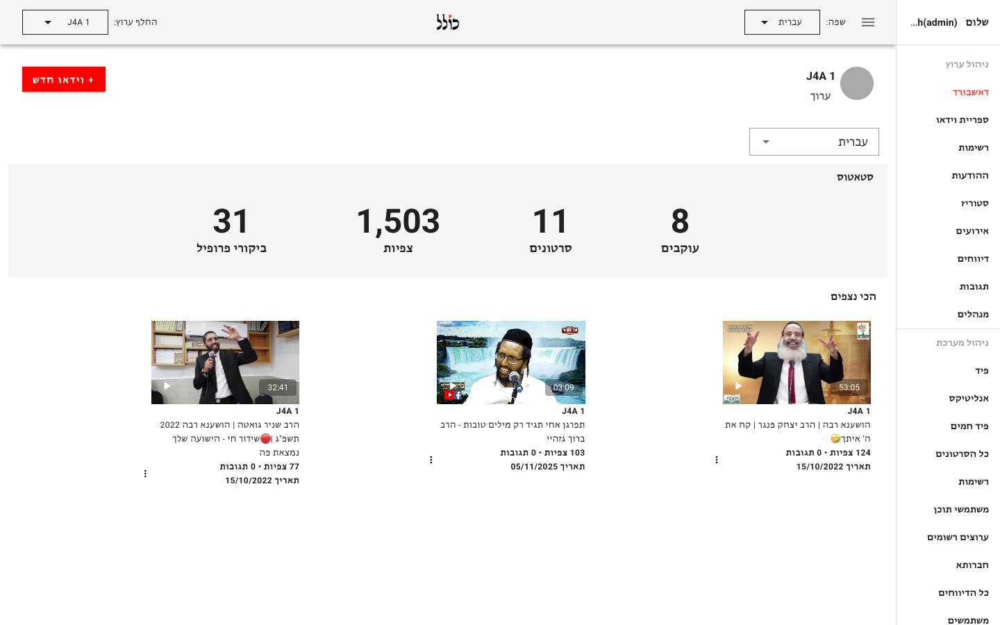
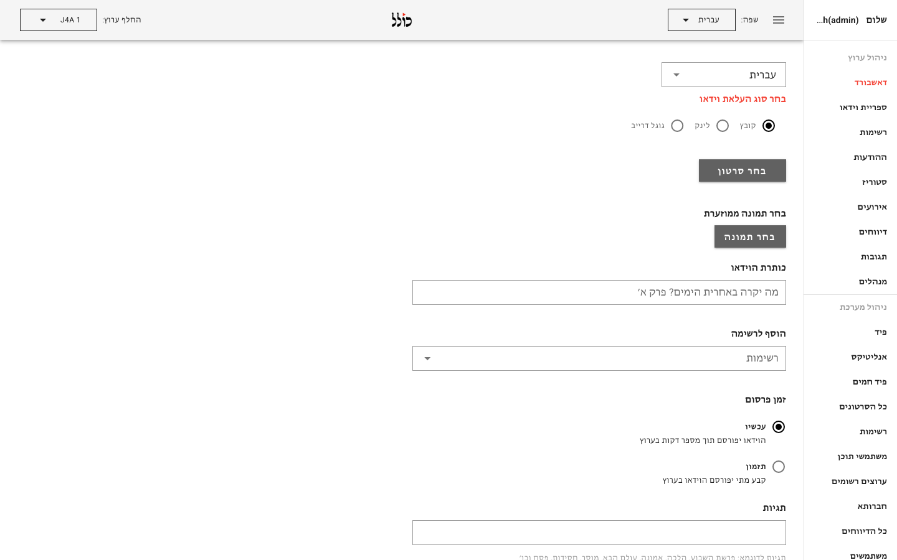
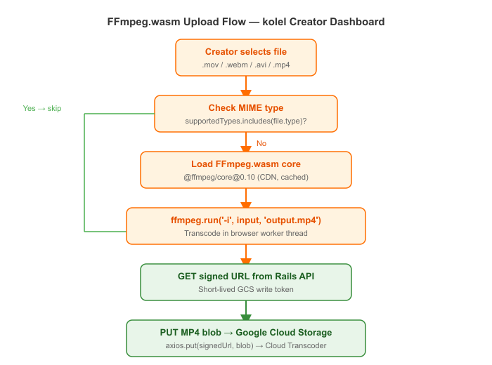

Client-Side Video Transcoding with FFmpeg.wasm in a Vue Creator Dashboard
How we eliminated a pre-upload transcoding server by running FFmpeg entirely in the browser using WebAssembly — inside the Kolel creator dashboard.
The Problem
The Kolel creator dashboard (publish.kolel.org) lets educators and rabbis upload video lessons directly from their browser.
Creators record on phones, tablets, and cameras — producing files in every format imaginable: .mov, .webm, .avi, .mkv.
Our Google Cloud Video Transcoder pipeline expects MP4 input. Running a dedicated server to re-encode every upload before it reaches cloud storage added latency, infrastructure cost, and an extra moving part to maintain.
We needed a way to normalize the format before the file ever left the creator's machine.
What We Built


We integrated @ffmpeg/ffmpeg into the Vue 2 upload component — making FFmpeg run entirely in the browser via WebAssembly.
When a creator picks a non-MP4 file, the browser downloads the FFmpeg WASM core (~30 MB, cached after first load), transcodes the file to MP4 in a Web Worker, and only then uploads the resulting blob to a Google Cloud Storage signed URL.
The Rails API and the downstream transcoding pipeline never see anything other than a clean MP4.
How It Works

The full upload sequence:
- Creator selects a video file in the Vue component
convertToMp4()checks the MIME type — skips transcoding if already MP4/MOV/M4V- FFmpeg WASM core is loaded (cached in browser after first run)
- The source file is written to FFmpeg's virtual filesystem
ffmpeg.run('-i', input, 'output.mp4')transcodes to MP4- The output bytes are read back and wrapped in a
Blob - The component calls the Rails API to get a GCS signed URL
- The MP4 blob is PUT directly to GCS — no server in the middle
- The Rails API records the video and triggers the Cloud Transcoder job
Key Technical Decisions
1. Loading FFmpeg with a pinned CDN core
The WASM binary is large. We pin a specific version of @ffmpeg/core from unpkg so the core is cached by the browser after the first upload session, and creators on a repeat visit pay no load cost:
import { createFFmpeg, fetchFile } from '@ffmpeg/ffmpeg';
async convertToMp4(file) {
const supportedTypes = ['video/mp4', 'video/mov', 'video/m4v'];
if (supportedTypes.includes(file.type)) {
return; // already a compatible format, skip transcoding
}
const ffmpeg = createFFmpeg({
log: true,
corePath: 'https://unpkg.com/@ffmpeg/core@0.10.0/dist/ffmpeg-core.js',
});
if (!ffmpeg.isLoaded()) {
await ffmpeg.load();
}
const fileName = file.name;
const outputFileName = 'output.mp4';
ffmpeg.FS('writeFile', fileName, await fetchFile(file));
await ffmpeg.run('-i', fileName, outputFileName);
const data = ffmpeg.FS('readFile', outputFileName);
this.selectedFile = new Blob([data.buffer], { type: 'video/mp4' });
}2. Signed URL upload — no credentials in the browser
The browser never holds GCS credentials. The Rails API generates a short-lived signed URL for the specific file path, then the browser PUTs directly to GCS with the correct Content-Type:
async uploadFileToSignedUrl(signedUrl, selectedFile) {
await axios.put(signedUrl, selectedFile, {
headers: { 'Content-Type': selectedFile.type },
});
}
async prepareVideoUpload() {
this.loading = true;
// convertToMp4 has already replaced this.selectedFile with the MP4 blob
await this.getSignedUrl();
await this.uploadFileToSignedUrl(this.signedUrl, this.selectedFile);
if (this.pickedThumbnail) {
await this.getImageSignedUrl();
await this.uploadFileToSignedUrl(this.thumbnailSignedUrl, this.pickedThumbnail);
}
this.addVideo(); // notify Rails API to create the video record
}3. Format allow-list instead of always transcoding
Running FFmpeg.wasm on a file that is already MP4 wastes time and memory.
We check the MIME type first and bail early for the common formats the transcoder already accepts (video/mp4, video/mov, video/m4v).
Only exotic formats go through the WASM path.
Results / What Changed
- Removed the pre-upload transcoding microservice entirely — one less server to maintain
- Creators uploading common formats (MP4, MOV) see no change in upload speed
- Exotic formats are handled transparently — creators never see a format error
- The Rails API and downstream Google Cloud Transcoder always receive well-formed MP4 input
- No credentials leave the server — the signed URL pattern keeps GCS access tightly scoped
Stack
Building a video upload pipeline? Get in touch →